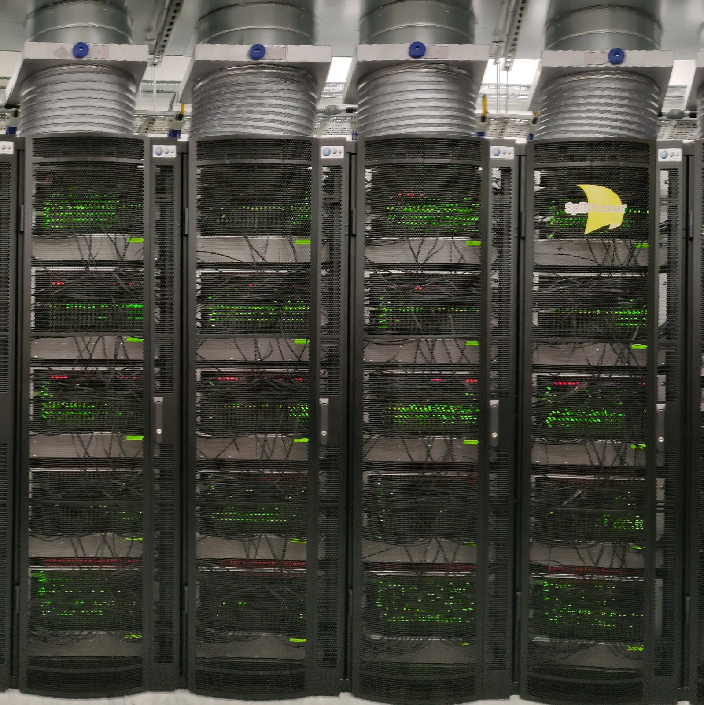
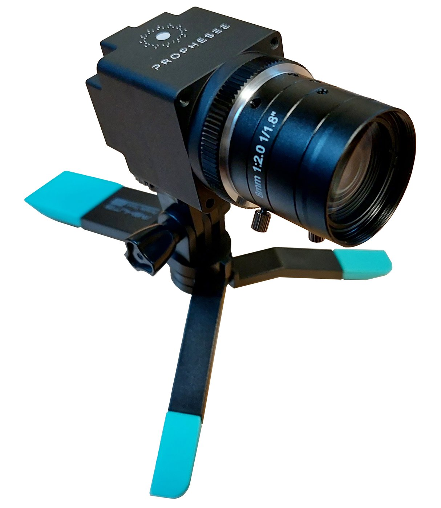
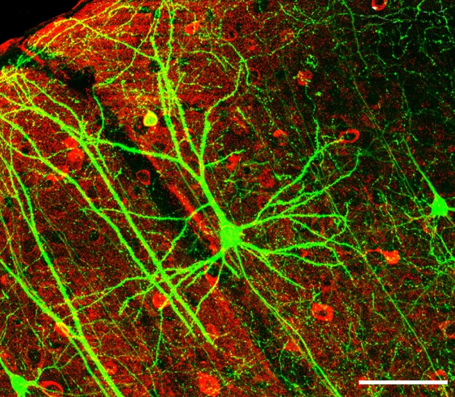
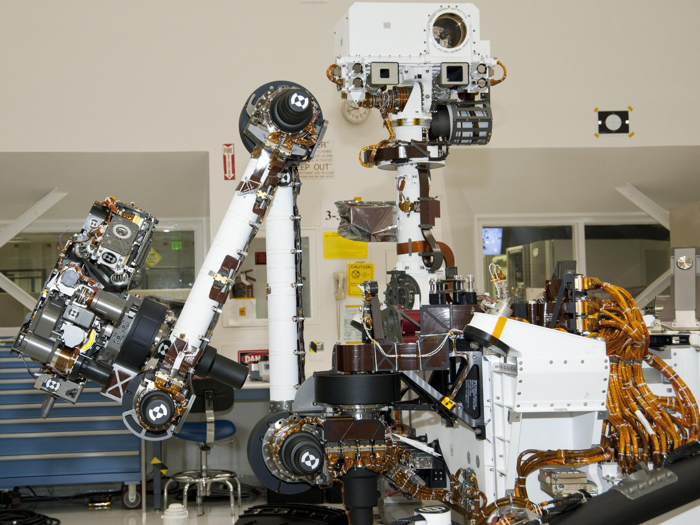
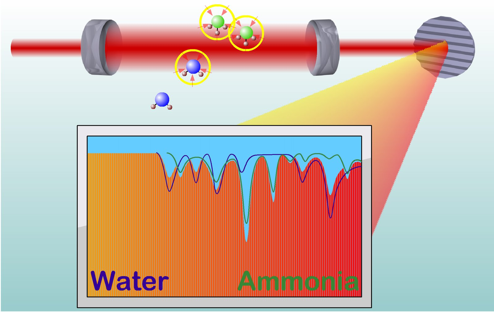

Our Mission
Making always-on intelligence practical where power, heat, and latency are the fundamental limits.
Put computation directly next to the sensor. By co-designing spiking neural network models, simulation toolchains, and digital event-driven cores, we ensure that what is simulated in software matches what the hardware computes — with zero unexpected accuracy divergence.
What We Build
A unified, vertically co-designed neuromorphic platform from models to silicon.
Neuromorphic Accelerator
A digital, event-driven neural processing architecture designed for always-on edge sensing. Prototyped on FPGA first (Prototype 0 in active development), with custom silicon as the long-term target.
OmniSim
Simulation and numerical analysis environment for spiking neural networks. Built from first principles so that model behavior in simulation strictly matches hardware digital execution.
OmniSDK
Developer compiler and deployment toolkit to import, build, and deploy spiking models to MorphoNerva hardware, supporting open standards including the Neuromorphic Intermediate Representation (NIR).
Representative Technology & Domain Imagery
Grounding neuromorphic systems in physical hardware, biological foundations, event sensors, and harsh field environments.








All photographs and third-party figures are verified open-source or public domain works used under licence. Complete attribution and source links are available in our Image Sources Register.
Our Commitment to Verifiable Science
Neuromorphic computing has sometimes suffered from exaggerated claims. MorphoNerva operates under a strict evidence-label policy:
- We publish only Measured or Sourced figures.
- No performance numbers are published until verified on our physical hardware.
- Every published result specifies the exact hardware platform, workload, power boundary, and reproduction commit.